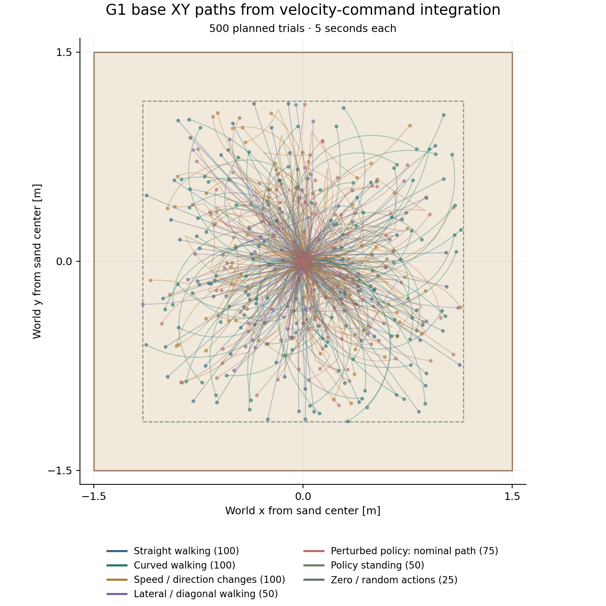
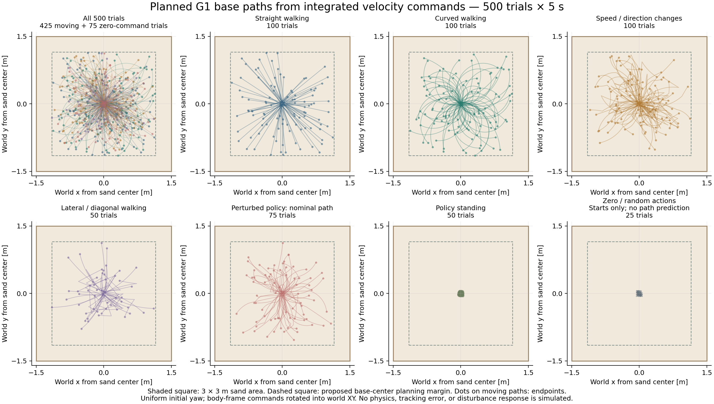

Command integration only. These curves assume perfect tracking of the planned body-frame velocity commands. They are not MPM simulation results and do not include foot slip, balance corrections, falls or action-disturbance responses. No 500-trial collection has been launched.


Circle: initial base center. Square: command-switch position. Arrow: integrated base heading at the selected time. The slider follows the proposed path; it does not run a simulator.
Each trial lasts five seconds. The forward velocity vx and leftward velocity vy are expressed in the robot heading frame; yaw rate wz is positive counterclockwise. Initial XY positions are sampled within ±0.05 m of the sand center. Initial yaw is sampled uniformly from −π to π, allowing the same body-frame commands to cover different world directions.
world_x_dot = cos(yaw) × vx − sin(yaw) × vy world_y_dot = sin(yaw) × vx + cos(yaw) × vy yaw_dot = wz
The script integrates each constant-command interval analytically, sampling the resulting path every 20 ms. Straight and curved trials use constant commands; other moving groups may switch commands once between 1.5 and 3.5 seconds. The policy command remains at 50 Hz even when physics and recording run at the proposed 200 Hz.
| Group | Trials | Command design before boundary rejection |
|---|---|---|
| Straight walking | 100 | Forward speed 0.05–0.28 m/s; zero lateral speed and yaw rate |
| Curved walking | 100 | Forward 0.08–0.35 m/s; lateral ±0.05 m/s; yaw-rate magnitude 0.15–0.60 rad/s |
| Speed / direction changes | 100 | Forward motion followed by a speed change or reversal; lateral and yaw commands may change |
| Lateral / diagonal walking | 50 | Lateral-speed magnitude 0.08–0.24 m/s; forward 0–0.12 m/s; optional lateral reversal |
| Perturbed policy | 75 | Walking and turning commands plus planned bounded joint-action noise; plotted path excludes the noise response |
| Policy standing | 50 | Zero velocity command; policy remains active |
| Zero / random joint actions | 25 | 12 zero-action and 13 random-action trials; no base-velocity tracking prediction |
Schedules leaving ±1.15 m in either XY axis were rejected and resampled, rather than clipping the trajectory. Forty-seven candidates were rejected. This conditions the accepted command distribution toward paths that fit the field. All starts remain near the center, so this plan emphasizes central sand contacts rather than uniform spatial coverage.
Collection status: saved schedules specify a 3 × 3 × 0.3 m sand volume, proposed 200 Hz recording, and randomized initial yaw. Those changes are not yet wired into the earlier reference recorder, which still uses the native 6 × 2 m task, fixed initial yaw and 50 Hz recording. The exact schedule file will be the input to that collection update. Splits are 400 training, 50 validation, and 50 test trials.
500 trial commands (CSV) · Complete plan (JSON) · Integrated XY and yaw (NumPy) · Reproduce the plots · Vector figure (SVG)